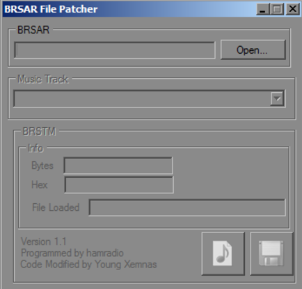

Converting Music is quite simple if your a PC user (sorry MAC users which include me) but here's how to convert music basically in the simplest way possible and how to loop it correctly as well. Make sure you already have a song folder set up for the xml!
STEP 1: Converting
1. Have the best song of your choice. (Recommended in .mp3) - any song as long as it\'s .mp3
4. You should have a menu like this: - Now click \"add\" and choose your .mp3 song
- then choose output for your destination folder you want the finished product to be executed to.
- Then click start and your good to go!
4.5 Here we have a simple documentation of what to name your song so it can execute in the game correctly. Depending on the name of the file will affect which theme it'll be replaceing in game.
File Name/Translation 5stars_cmplt Got all 5 "stars" on a save file
nall_bubble All players bubbled
nathletic Alternate, "athletic" overworld/platforming theme. This.
BGM_HIKOUSEN Airship
BGM_HIKOUSEN_ROUKA Airship (drum track only)
BGM_LAST_CASTLE_ROUKA Last Castle (drum only)
select_map01_nohara World 1 Map
select_map02_sabaku World 2 Map
select_map03_yuki World 3 Map
select_map04_umii World 4 Map
select_map06_cliff World 6 Map
select_map09_rainbow World 9 Map
BGM_MAP_W5 World 5 Map
BGM_MAP_W7 World 7 Map
BGM_MAP_W8 World 8 Map
BGM_MG_BTL Enemy Battle from map encounter
BGM_MG_BTL_FANFARE Victory
BGM_OBAKE Ghost House
BGM_SIRO Castle
BGM_STARCOIN_CMP1 Got all the Star Coins for one world.
BGM_STARCOIN_CMP_ALL Got all the Star Coins for all worlds.
BGM_SUICHU Under water
BGM_TORIDE_BOSS Tower boss
course_clear goal flag pole
course_clear_zoro Classic version (when there\'s fireworks and you get a toad house)
DEMO_end Ending game cinematic (walking back with Peach to the ballons)
DEMO_op Opening game cinematic (\"It\'s Peach\'s birthday...\")
down last player dies (level exit)
dummy_fanfare First Bowser victory in endgame
dummy_harp First Peach encounter in endgame
kazan Lava Level
kazan_tika Lava Underground Level
LastBoss_fanfare Final Bowser victory
LastBoss_harp Final Peach encounter
mori Forest Level
shiro_boss Castle Boss
STRM_BGM_BONUS Toad houses
STRM_BGM_CHIKA Underground Level
STRM_BGM_MENU Menu
STRM_BGM_SABAKU Desert Level
STRM_BGM_SANBASHI Bridge Level
STRM_BGM_STAR Star Powerup
STRM_BGM_YUKI Snow Level
switch P switch timer
title Title Screen
toride Fortress Level
(some file names have a \"_fast\" in the name meaning that song will be played at 100 seconds)
STEP: 2 Patching
1. After you rename the file we must do one final step and that's to fix the looping of brsar so simply download the following file: https://dl.smwcentral.net/9578/BRSAR%20File%20Patcher.zip and make sure you have the file wii_mj2d_sound.brsar ready. - the .brsar can be recieved by reggie dumping the file .brsar
- brsar pather is found in the link
2. Now open and load your converted .brstm song file then choose which music track its replacing. For example, if I were replacing the desert level music I would then choose BGM_sabku. Finally compile and save it.
 - open, compile, then save
3. Not finally you put the modified .brsar in ths sounds folder but keep it out of the stream folder as that\'s where the music belongs. And put your .brstm in the stream folder. If one doesn't exist then add the stream folder yourself. - place brsar in sounds
- place converted .brstm in stream
You may find that NewerSMBW has additional .er files as music. To use this format, simply change the file extension from .brstm to .er. You don't need to patch the BRSAR when editing these files. _________________________
4.5 Here we have a simple documentation of what to name your song so it can execute in the game correctly. Depending on the name of the file will affect which theme it'll be replaceing in game.
File Name/Translation 5stars_cmplt Got all 5 "stars" on a save file
nall_bubble All players bubbled
nathletic Alternate, "athletic" overworld/platforming theme. This.
BGM_HIKOUSEN Airship
BGM_HIKOUSEN_ROUKA Airship (drum track only)
BGM_LAST_CASTLE_ROUKA Last Castle (drum only)
select_map01_nohara World 1 Map
select_map02_sabaku World 2 Map
select_map03_yuki World 3 Map
select_map04_umii World 4 Map
select_map06_cliff World 6 Map
select_map09_rainbow World 9 Map
BGM_MAP_W5 World 5 Map
BGM_MAP_W7 World 7 Map
BGM_MAP_W8 World 8 Map
BGM_MG_BTL Enemy Battle from map encounter
BGM_MG_BTL_FANFARE Victory
BGM_OBAKE Ghost House
BGM_SIRO Castle
BGM_STARCOIN_CMP1 Got all the Star Coins for one world.
BGM_STARCOIN_CMP_ALL Got all the Star Coins for all worlds.
BGM_SUICHU Under water
BGM_TORIDE_BOSS Tower boss
course_clear goal flag pole
course_clear_zoro Classic version (when there\'s fireworks and you get a toad house)
DEMO_end Ending game cinematic (walking back with Peach to the ballons)
DEMO_op Opening game cinematic (\"It\'s Peach\'s birthday...\")
down last player dies (level exit)
dummy_fanfare First Bowser victory in endgame
dummy_harp First Peach encounter in endgame
kazan Lava Level
kazan_tika Lava Underground Level
LastBoss_fanfare Final Bowser victory
LastBoss_harp Final Peach encounter
mori Forest Level
shiro_boss Castle Boss
STRM_BGM_BONUS Toad houses
STRM_BGM_CHIKA Underground Level
STRM_BGM_MENU Menu
STRM_BGM_SABAKU Desert Level
STRM_BGM_SANBASHI Bridge Level
STRM_BGM_STAR Star Powerup
STRM_BGM_YUKI Snow Level
switch P switch timer
title Title Screen
toride Fortress Level
(some file names have a \"_fast\" in the name meaning that song will be played at 100 seconds)
You'll have to wait for Fruit Smasher's permission to do that, since he posted the thread. _________________________ Don't expect me to be very active here, since I have plans, and many other things in my life.